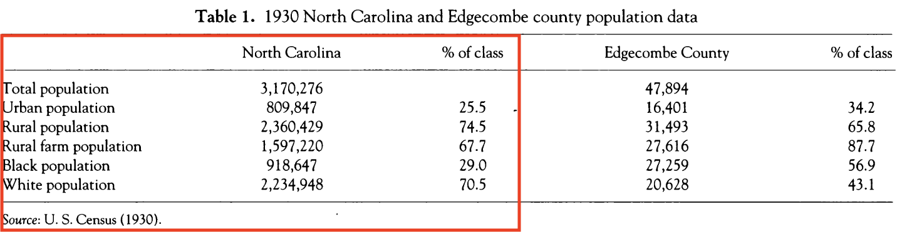
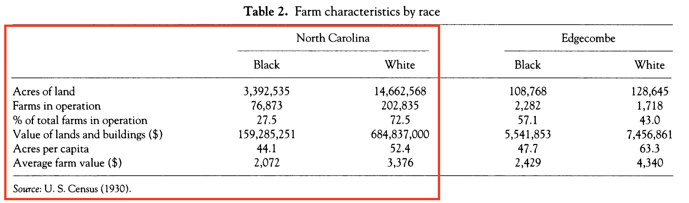

library(readxl)
library(tidyverse)
library(gt)[Assess] Rural Electrification Case Study
📍 Edgecombe County, CA
Class Overview
- Centering activity
- Setting the stage
- Zoom with Dr. Harrison
- Paired coding
- Group Debrief
Centering Activity
Setting the Stage
- This week’s focus is on coding style and data tidying
- Using data from the 1930s Census and digitized Rural Electrification Surveys provided by Dr. Conor Harrison
Zoom with Dr. Harrison
- Feel free to ask questions!
Learning Outcomes
- Understand coding style best practices
- Continued data tidying (lengthening and widening data)
- Summarize patterns from census and survey data in the 1930s
- Connect findings to theoretical understandings of restorative justice
Let’s get Started
- Find your pair
- Open Posit
Load Packages
Coding Style Best Practices
Names
- Naming conventions are a matter of preference, but readability is key.
- R4ds suggests using lowercase letters, numbers, and underscores only.
- longer, more informative names are usually beter than short, confusing names.
# strive for
county_vars_1930 <- read_csv("data/county_vars_1930.csv")
state_vars_1930 <- read_csv("data/state_vars_1930.csv")
# avoid
CNTYVRS30 <- read_csv("data/county_vars_1930.csv")
rm(CNTYVRS30)Spaces
- Spaces should go on both sides of operators (-, +, >, etc.), except for ^.
- parentheses do not need spaces around them.
- use a space after a comma, like English. :-)
# strive for
(15 - 5)^2
mean(county_vars_1930$total_pop)
# avoid
( 15-5 )^ 2
mean (county_vars_1930$total_pop)Pipes
- Pipes should have a space before them and should be the last part of a line.
- After a pipe, the next line should be indented two spaces (RStudio will automatically do this for you if you end your line with a pipe).
# strive for
county_vars_1930 |>
filter(state %in% c("Massachusetts", "Washington")) |>
count(county)
# avoid
county_vars_1930 |> filter(state %in%c("Massachusetts", "Washington")) |> count(county)ggplot
- ggplot functions just like pipes (i.e., each line should end with a +)
county_vars_1930 |>
group_by(state) |>
summarize(
sum_total_pop = sum(total_pop)
) |>
ggplot(aes(state, sum_total_pop)) +
geom_col() +
theme(axis.text.x = element_text(angle = 90))Exercise One
Restyle the following code chunks and label what each line is doing, using “#”.
county_vars_1930|>filter(state %in%c("Massachusetts", "Tennessee", "Washington", "New Mexico"))|>group_by(state)|> summarize(n=n(), mean_pop =mean(total_pop,na.rm =TRUE), mean_rural_farm_pop=mean(rural_farm_pop,na.rm=TRUE))|>filter(mean_rural_farm_pop>=6000)
county_vars_1930|>filter(county %in%c("Washington","Jefferson","Franklin"),total_pop >=4000)|>group_by(county)|>summarise(n_states=n())Data Tidying
Three Rules for Tidy Data
- Each column represents a variable (and vice versa)
- Each row represents an observation (and vice versa)
- Each value is a single cell (and vice versa) ![]images/
Exercise Two
Describe what makes the county_vars_1930 dataset tidy. Provide examples of the following using the dataset.
- variables:
- observations:
- values:
Lengthening Data
How do we get from the state_vars_1930 dataframe to Table one in Dr. Harrison’s manuscript?

Lengthening Data
- In pairs, brainstorm the general process you might need to take to get from the
state_vars_1930dataframe to table one on whiteboards. - hints:
- You may need to calculate the total rural population (population that is non-urban)
- You’ll likely need to reshape your data
- We haven’t learned all of the functions necessary to fully create the table, so we can strategize together on how to calculate percentage of class
Lengthening Data
denom <- data.frame(denom = c(NA, 3170276, 3170276, 2360429, 3170276, 3170276))
state_vars_1930 %>%
filter(state == "North Carolina") %>%
mutate(rural_pop = total_pop - urban_pop) %>%
select(state, total_pop, urban_pop, rural_pop, rural_farm_pop, black_pop, white_pop) %>%
pivot_longer(cols = c(total_pop:white_pop),
names_to = "name",
values_to = "count") %>%
bind_cols(denom) %>%
mutate(perc_class = round(((count/denom)*100),1)) %>%
select(name, count, perc_class)Exercise Three
- Make the table pretty using the
gtpackage. - Create the second half of the table using the
county_vars_1930dataframe for Edgecombe County, NC
Widening Data
Lengthening Data
How do we get from the state_vars_1930 dataframe to Table two in Dr. Harrison’s manuscript?

Widening data
- In pairs, brainstorm the general process you might need to take to get from the
state_vars_1930dataframe to table 2 on whiteboards. - hints:
- You may need to calculate % of total farms, acres per capita, and the average land and building value by race
- You’ll likely need to reshape the data
- We haven’t learned all of the functions necessary to fully create the table, so we can strategize together on how to calculate percentage of class
Combining Functions
state_vars_1930 %>%
filter(state == "North Carolina") %>%
mutate(black_perc_total_farms = (black_num_farms/(black_num_farms + white_num_farms)),
white_perc_total_farms = (white_num_farms/(black_num_farms + white_num_farms)),
black_acres_per_cap = black_acres/black_num_farms,
white_acres_per_cap = white_acres/white_num_farms,,
black_avg_val = black_farm_val/black_num_farms,
white_avg_val = white_farm_val/white_num_farms) %>%
select(state, black_num_farms, white_num_farms, black_perc_total_farms,
white_perc_total_farms, black_farm_val, white_farm_val, black_acres_per_cap,
white_acres_per_cap, black_avg_val, white_avg_val) %>%
pivot_longer(cols = starts_with(c("black", "white")),
names_to = "name",
values_to = "value") %>%
separate(name,
into = c("race", "name"),
sep = "_", extra = "merge") %>%
pivot_wider(names_from = race,
values_from = value)Exercise four
- Make the table pretty using the
gtpackage. - Create the second half of the table using the
county_vars_1930dataframe for Edgecombe County, NC
Rural Electrification Surveys
- Digitized data from 1934 Rural Electrification Surveys
- Dataset includes 412 entries, with 74 variables. Some highlights include:
USER_IDUSER_NUMBERLINEUSER_NAMECOND_PREMISES_RCRATE_INTER_RCTENURERACECORRECT_FACTORKWH_YEARBILL_ANNUAL
#| warning: false
#| message: false
#| echo: false
#| eval: true
survey_edgecombe <- read_excel("~/Documents/GitHub/ES-202/hw/case_studies/week-04-REA/data/survey_edgecombe.xlsx")survey_edgecombe <- read_excel("data/survey_edgecombe.xlsx")Exercise Four
Compare average ratings for condition of the premise and interview quality by race and tenure. Remove data inputs with “Unknown” listed for race or tenure, and format the table nicely.
Based on your findings, describe the role that rating the condition of the premise and interview quality played in determining the correction factor.
Calculate the following for race and tenure. Remove data inputs with “Unknown” listed for race or tenure, and format the table nicely.
Average uncorrected annual energy usage
Average corrected annual energy usage
Average bill
Average cost per Kwh
Based on your findings, describe the role that rating the condition of the premise and interview quality played in determining the correction factor. How did this state-sanctioned process shape the energy landscape in Edgecombe County that may have lasting effects today?
Reflect on your findings and connect them to our readings on distributional justice AND restorative justice.
Bonus: Using the dataframe and data dictionary, compare patterns in a variable of your choice (i.e., owns a waffle iron, owns x number of hogs), and compare disparities among tenure and race. Remember to remove data inputs with “Unknown” listed for race or tenure, and format the table nicely.